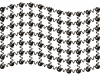
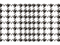
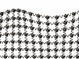
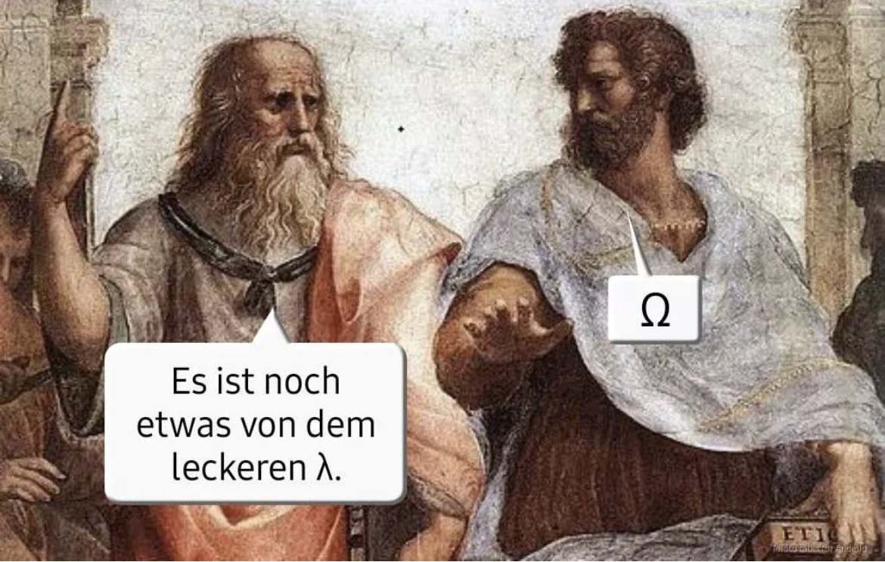

Didaktik/Methodik Gesang
HMTM Hannover
27.10.2026
→ Kurs im LMS der HMTMH
→ Protokolle bitte immer bis Mo, 18 Uhr senden an:
julian.popken@hmtm-hannover.de
und
stachurad@stud.hmtm-hannover.de
Bill Wurtz: history of the entire world, i guess (Youtube 2017)
(Grout u. a. 2019, 6)
(Grout u. a. 2019, 8)
Wikimedia
(Grout u. a. 2019, 5)
(Grout u. a. 2019, 7)
(Lament For GILGAMESH, The Gold Lyre Of Ur 2022)
(Grout u. a. 2019, 10)
1860: Edouard-Leon Scott de Martinville (Phonautograph)
“Au clair de la lune”
1878: Thomas Edison (Phonograph)
“Mary had a little lamb”
Quelle: Meyer, Jürgen: Akustik und musikalische Aufführungspraxis. Frankfurt. 4. Auflage, 2004.
Transversalwelle (Seil, Geigensaite)

Die einzelnen Teilchen bewegen sich an feststehendem Ort auf und ab.
Nur das Wellenmuster bewegt sich weiter.

Die einzelnen Teilchen bewegen sich in/gegen die Ausbreitungsrichtung vor bzw. zurück.
Die Ausbreitung des Schalls erfolgt radial von der Schallquelle. (Nicht wie in der Grafik).

Die einzelnen Teilchen beschreiben in vollständiger Bewegung eine kreisförmige Linie.
Eine Ente auf der Wasseroberfläche bliebe ungefähr am gleichen Ort.
Quelle: Hall, Donald E.: Musikalische Akustik. Ein Handbuch. Main, 1997.
\[ Wellenlänge = \frac{Schallgeschwindigkeit}{Frequenz} \]
\[ λ = \frac{c}{f} \]
\[ f = \frac{c}{λ} \]
Quelle: Antivandalismus.de

https://www.rottler.de/hs-fs/hubfs/Website/Blog/Blog_Aufbau_Ohr_1080x500.png?width=1080&height=500&name=Blog_Aufbau_Ohr_1080x500.png
Grafiken Wellenformen: „Wellentypen - Transversalwelle (Animation) | LEIFIphysik“. Zugegriffen 20. Oktober 2025. https://www.leifiphysik.de/mechanik/mechanische-wellen/downloads/wellentypen-transversalwelle-animation.